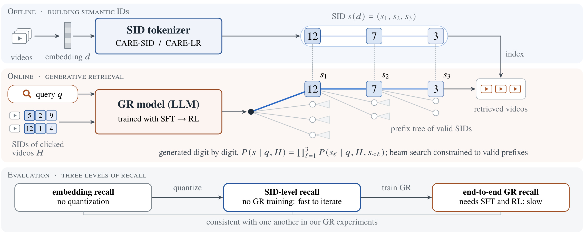
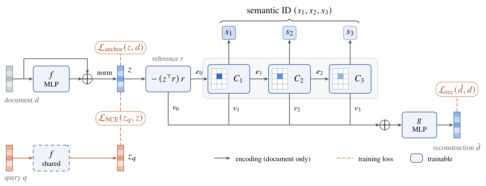
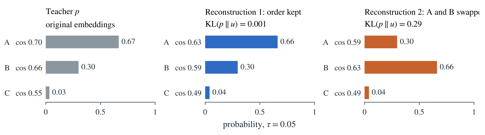
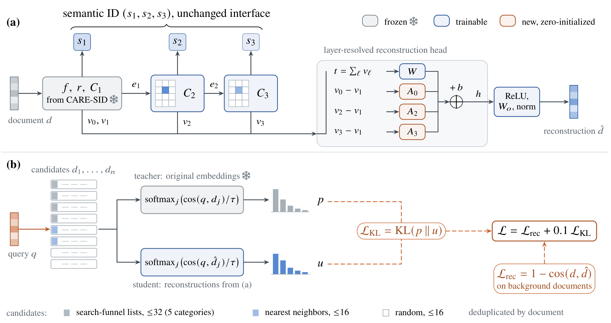
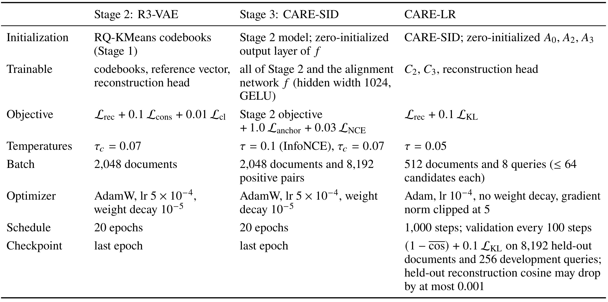
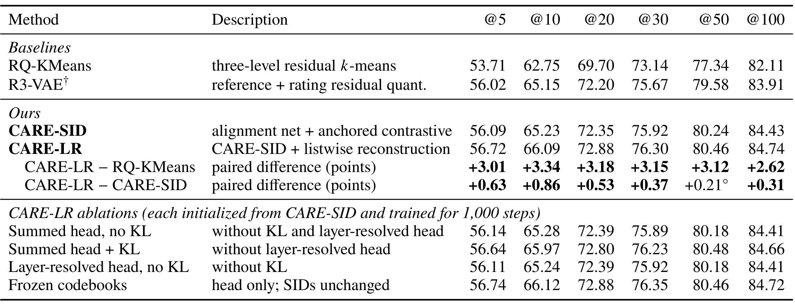
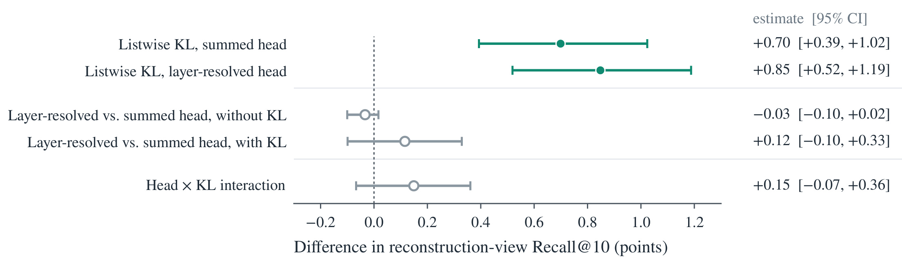
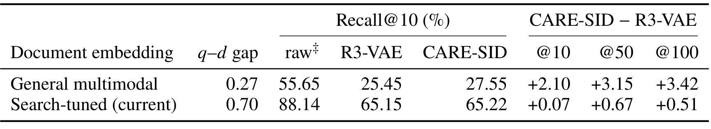

CARE：面向检索相关性的语义 ID 对齐与列表重构
腾讯 Yuan Xu、Dawei Chen、Xiaoguang Lin、Xin Chen、Yulong Ou、Haijun Wu 的工作，英文题名为 CARE: Contrastive-Anchored Residual Encoding with Listwise Reconstruction for Retrieval-Oriented Semantic IDs。论文首次提交于北京时间 2026 年 11 月 16 日 16:27，本文依据 arXiv v1 的完整十八页内容精读。唯一论文入口为 arXiv:2611.20721。本轮未核验到本文独立代码或项目页；文中引用其他方法的代码不等于 CARE 已开源。
生成式检索只能沿语义 ID 寻找文档，但常见 ID 构造只优化文档向量自身的误差，无法控制量化究竟丢掉了哪些查询相关性。同样小的重构误差，可能保留正确候选次序，也可能把决定性的两个候选交换。
1. 背景和问题
在普通向量检索中，查询与文档各自得到一个连续表示，系统依据相似度选择候选；生成式检索则先给文档分配离散语义 ID，再让一个生成模型根据查询和用户历史输出 ID。这个转换改变了信息流：生成模型没有直接看到全部文档原始向量，而是在由 ID 前缀构成的树上选择路径。若两个本应被不同查询区分的文档在编码过程中变得难以区分，后续生成器再强也不能凭空恢复被编码界面丢弃的证据。因此 tokenizer 的质量需要由检索任务解释，而不能仅由训练损失或码本使用率判定。
论文采用三层 ID，每层有自己的一套 token。文档向量为二百五十六维，三级码本大小分别为一万六千三百八十四、四千零九十六和两千零四十八，理论组合空间约为一千四百亿。组合容量大不代表检索语义良好：随机分配 ID 可以让几乎每篇文档拥有独占地址，却没有把相关文档放到生成器能够学习的相邻路径上。作者用独占完整 ID 的文档比例 ICR 监测碰撞或坍塌，同时明确它无法独立衡量召回。这个区别解释了为什么一个 tokenizer 可以在“冲突少”上成功，却在面向查询的寻址上失败。
残差 k-means 是本文最基础的起点：先聚类原向量，减掉选中中心，再聚类剩余残差。它直接、易分布式训练，也能为神经量化器提供稳定初值；但优化的是平均几何失真。若数据密度不均，少数大桶会吞掉大量文档，用户查询真正需要的方向也未必是平均误差最敏感的方向。把残差误差做小，并不保证查询相关文档排在不相关文档之前。作者并未否认这个基线的实用性，而是将它作为训练链路第一阶段，并在相同检索协议下保留可比较的起点。
RQ-VAE 允许编码器、码本和解码器共同学习，表达能力增强，同时也增加初始化敏感、低码本利用与坍塌风险。R3-VAE 在这个家族中引入参考方向和评级残差，训练更稳定，是 CARE-SID 真正建立其上的量化内核。判断新方法贡献时，不能只比较最终模型与 k-means，因为两者之间已经经过参考向量、评级量化和重构头训练。主表中 R3-VAE 本身的收益很大，CARE-SID 在搜索调优过的上游向量上只再增加很小的头部召回，因而必须把这几层改变拆开阅读。
另一条路线将末级残差投影到较低维，再用有限标量格点编码。论文复现的 Res-KmeansFSQ 在前两级保留 k-means，末级使用十三个二值维度。每一位近似均衡，不代表联合码均衡，因为位与位之间相关。作者还指出该实现对硬取整码计算的熵项不能把梯度送回投影矩阵，只能监测失衡。这个细节提醒读者区分“目标里有熵正则”和“训练实际优化了码分布”：前者写在公式或日志里，并不足以证明编码器收到了有效纠偏信号。
事后容量平衡则限制桶大小，把文档从热桶移到其他末级码。它能改善分配统计，却可能把文档移离最合适的中心，而且分配依赖整批文档；新文档单独到达时，无法仅凭同一组码本重现原来的全局再分配。本文要求的 document-only encoding 很具体：输入一篇文档自己的向量，就应当能够得到稳定 ID，不需要再次读取查询集合或整个语料库。这与训练可使用查询监督并不冲突，训练时让参数吸收相关性，编码时仍只依赖单篇文档，是 CARE 两个变体共同保留的接口。
由此出现两个相继的问题。第一个问题是“在哪个空间量化”：现有文档向量即使包含搜索相关性，也未必最适合被三级离散地址切分。CARE-SID 在量化前加入小幅可学习的残差对齐，用查询—文档对比学习调整空间，同时锚定原表示，防止为了对比目标把大量文档挤到同一个桶。第二个问题是“量化之后怎样保留次序”：逐文档重构只约束各自误差，不能知道对某条查询哪些相似度差距决定排序。CARE-LR 因此把原始向量对候选列表诱导的分布作为教师，监督重构后的候选分布。
必须注意，第二个问题在本版本中的答案主要落在重构通路上，而生成器实际消费的是整数 ID。R3-VAE 和 CARE 的重构不仅用选中的码字，还使用每篇文档不同的连续评级和参考系数；这些系数不进入三位 ID。即使两篇文档拥有同一个 ID，它们也可能被重构成不同向量。若重构视图提高，而纯整数 ID 的分桶质量基本不动，不能据此断言生成器已经获得相同增益。论文自己把端到端结果留到后续版本，这一证据边界贯穿方法、实验与部署解读。
在已有工作关系上，列表蒸馏并非本文首次提出。Distill-VQ 已经用原始向量分布训练向量量化，PRO 将查询相关的前缀排序蒸馏到部分重构；CARE-LR 的具体区别在于参考与评级分量上的完整重构学生、真实搜索漏斗分层候选，以及冻结首级地址的训练界面。将这一点讲清楚，比把常见的 KL 目标称为新排序原理更准确。本文也没有直接优化生成器，其方法与生成模型的改进可以互补，不能把相关工作中的生成器收益搬到本模型名下。
再看一个几何直觉：两个文档误差范数相同，一个沿与查询正交的方向移动，另一个沿查询方向移动，二者对排序的影响可能完全不同。多查询又会关注不同投影，所以单纯降低平均文档误差无法保证重要候选间隔不被翻转。CARE 的锚定约束保留整体空间，列表约束再显式观察同一查询的竞争集合，两种约束承担不同角色；前者的保真、后者的局部排序，以及最终离散地址可读性需要分别验收。
从研究价值看，本文较有用的部分是把容易混在一起的对象拆开：上游 embedding 的检索能力、ID 分区结构、带连续辅信息的重构能力，以及生成器学会走前缀树后的召回。它还把尾桶的随机消费改成精确期望，避免不同桶内抽样为模型差值引入不必要噪声。对需要快速迭代 tokenizer 的工程团队而言，这些中间评估能节省反复训练生成器的时间；但它们只是更清晰的诊断工具，最后仍须由实际生成器、候选映射和业务结果完成验证。
2. 方法
2.1 面向检索的 SID 评估
作者先定义统一的文档行预算，而不是先按每个方法各取若干个桶。每条查询对应一个理想文档集合，视图给桶排序，然后逐桶消费文档行直到预算耗尽。最后一个桶往往只能取一部分，桶内又没有进一步排序信息，因此采用不放回均匀抽样的命中期望。若某理想文档在桶中有多份拷贝，不能简单按桶是否被访问计为命中；若理想文档缺少向量而未进入池，也不能偷偷从召回分母中删掉。
符号解释：$n$ 是当前桶的文档行数，$c$ 是某个理想文档在桶中的拷贝数，$m$ 是到达该桶时剩余的行预算，$G(q)$ 是查询 $q$ 的理想文档集合。分式给出一次也未抽中该文档的概率，因此用一减去它。当前数据一篇文档一行，$c=1$ 时就简化为 $m/n$；一百行的桶只剩十行预算时，某个单份目标的命中贡献为零点一，而不是零或一。

Figure 2 顶部把原始视频向量经过 tokenizer 转成三位 ID，再维护 ID 到视频的映射；中部的生成器读取查询和历史点击视频 ID，按合法前缀树逐位生成目标地址；底部则分出 embedding、SID 和端到端生成器三层召回。蓝框强调本文主要报告的是无需训练生成器的 SID 层评估，不能把中部的 SFT、RL 或 beam search 图示读成本文已经完成的端到端定量对照。三层在作者后续内部实验中的排序方向被描述为一致，但这个文字声明没有替代公开端到端表格。对地址空间的讨论应先说明生成器可以看到哪些离散信息，再说明评估额外调用了哪些连续表示。
四种检索视图也有不同的信息预算。raw_dense 逐行使用原始向量，是未量化参照；rawmean_Pℓ 按前 ℓ 级码把文档分桶，以原始向量均值作为桶键，主要观察划分；recon_P3 以完整 ID 分桶、以重构向量均值作键，观察 ID 连同重构通路；recon_doc 则逐行直接排序重构向量。图底部同一条箭头不意味着这些视图可互换。在当前池里首级桶平均约六十一行，十行预算通常连一个完整首级桶都消费不了；完整三级 ID 约百分之九十八的行位于独占桶，因而三级原均值视图接近原始向量逐行检索。本文预先把 recon_P3@10 定为 CARE-LR 主指标，其他预算与视图用于诊断，不能在看完结果后任意挑一个最大的数作为主结论。评估图也给出一个排查顺序：原向量弱，先查上游；原向量强而分桶弱，查地址划分；分桶相近而重构差，查辅助重构；这些都好而生成召回弱，才定位生成器或解码约束。这个顺序是根据接口推导的分析建议，本文没有逐项执行并量化所有环节。
2.2 CARE-SID 的锚定对齐与评级残差量化
文档先通过两层残差 MLP，再归一化。输出层权重和偏置初始化为零，使新阶段在第一个训练步之前完全等价于前一阶段，不是仅仅“差不多保持性能”。查询在训练中通过同一个对齐网络，提供对比信号；离线生成文档 ID 时不需要查询。隐藏宽度为一千零二十四，上游向量本身保持固定，改变的是附着在量化器前的小型对齐模块。
符号解释：$d$ 是单位化文档向量，$f$ 是残差对齐网络，$z$ 是对齐后归一化向量，$W_1,W_2,b_1,b_2$ 是两层网络参数。初始 $f(d)=0$，所以 $z=d$；这保证 k-means 暖启动和 R3-VAE 已学到的码空间不会被随机输出层立即破坏。归一化约束其方向，锚定损失另外约束它不要偏离原向量。随后，一个可学习单位参考向量移除公共方向，剩余部分依次进行三级评级残差量化。每层先归一化残差，按余弦选择一个码字，再减去沿该码字的投影。它与普通 k-means 的“减中心”不同，每一步都重新归一化，并显式保留投影幅度。
符号解释：$r$ 是单位参考方向，$e_\ell$ 是残差，$c_{\ell,k}$ 是第 ℓ 级归一化码字，$s_\ell$ 是选中索引，$\rho_\ell$ 为评级系数，$v_\ell$ 是投影分量。整数 ID 只有 $(s_1,s_2,s_3)$，不含 $\rho_\ell$ 或参考投影幅度。 硬 top-1 选择后，选中码字与输入通过评级表达式仍有梯度；作者没有为索引本身引入直通估计器。重构头把四个连续分量求和后送入 MLP，输出再次归一化。
符号解释：$t$ 是参考与评级分量之和，$g$ 是重构头，$\hat d$ 是重构向量；$\mathcal L_{rec}=1-\cos(d,\hat d)$，$\mathcal L_{anchor}=1-\cos(z,d)$。重构目标固定为原始 $d$，而不是被对齐网络自己移动的 $z$，避免网络通过让目标空间坍塌来降低误差。权重依次为 $\beta=1$、$\gamma=0.03$、$\lambda_1=0.1$、$\lambda_2=0.01$；对齐不是完全自由的重新学习。
符号解释：$B$ 是正查询—文档对数量，$\sigma_{ij}$ 是对齐后余弦，$\tau=0.1$ 为温度。两个方向分别让查询识别正确文档、文档识别正确查询，批内其他项是负例。它作用在量化之前的连续空间；直接对量化输出施加同类压力的早期对照出现桶合并，不能假设监督越贴近离散输出就越好。
符号解释：$w_i$ 是参考移除残差对首级码字余弦经温度 $\tau_c=0.07$ softmax 后的软分配，$P_{ij}$ 衡量两文档同簇的软权重。一致性项按论文实现比较初始残差与累积分量；软同簇项让原向量相似的文档倾向共享首级桶。该项把 $e_0$ 当常量，只更新首级码本；它不是利用查询标签再次拉近整条编码链。

Figure 3 的实线从文档经过残差对齐、参考移除和三级码本后发出三个整数，橙色虚线则表示不同训练损失挂接的向量。查询只出现在左下角的共享对齐训练支路，没有进入文档独立编码的输出接口。参考和三个评级分量走向右侧重构头，而不是被拼成额外的 ID 位，这正是重构视图信息量更大的来源。图中未画出一致性与软同簇项，不能因此把训练目标简化成只有三个损失；完整组合以上面的公式为准。理解这幅图时应区分“哪些参数被共同训练”与“哪些张量在实际编码时必须计算”：重构头参与训练与代理评估，却不会作为线上生成器的附属输入。对比损失只在量化前观察查询，能够改变文档进入哪个区域，但最终仍由三级硬选择决定地址；单个向量被移动得合理并不保证其邻居集合整体最优。右侧重构又通过连续分量获得更细的信息，因此一条样本的重构余弦上升，与它在所有查询下的候选名次上升并不是同一事件。这也是为什么作者同时保留查询侧代理和纯分桶观察。参考方向本身不占据第四个地址位，三位ID的长度没有因公共分量增加。三个阶段依次为 k-means 拟合、R3-VAE 训练、加入零初始化对齐网络后的 CARE-SID 训练。后两段各二十轮，因此 CARE-SID 对 R3-VAE 的差异同时包含网络、锚定、对比目标和额外二十轮，不能把全部差值归因于一个损失权重。作者还在不同 embedding、较小码本的早期试验中检查暖启动、锚定强度和同簇权重：这些设计分析说明为什么采取当前组合，但不是当前主表设置下的独立消融。
2.3 CARE-LR 的列表分布蒸馏
CARE-LR 为每条训练查询构造最多六十四篇候选：最多三十二篇来自真实搜索漏斗的五类来源，另加最多十六篇原空间近邻和十六篇随机文档，按文档去重。漏斗类别仅用于分层采样，教师标签不是点击、人工等级或原排序位置，而是固定原始向量与查询的余弦分布。这样训练关心的是一条查询内部的相对间隔，不要求每篇重构向量的每一个余弦数值独立复原。
符号解释：$p_j$ 为原始 embedding 教师在候选 $j$ 上的概率，$u_j$ 为重构学生概率，$q$ 在本阶段保持原空间，KL 方向为教师到学生。背景文档的重构损失继续约束总体保真，防止仅为训练列表牺牲其他文档。教师是否正确仍受上游检索模型限制，列表蒸馏传递的是上游分数关系，不是额外获得真实用户因果偏好。

Figure 4 中教师对 A、B、C 的余弦为零点七零、零点六六、零点五五。第一种重构仍让 A 高于 B，其列表概率约为零点六六和零点三零，KL 约零点零零一；第二种重构把 A 与 B 对换，概率也反过来，KL 上升到零点二九。这并不是一个数据集上的收益图，而是解释损失函数盲点的构造反例：两篇文档移动距离可以相同，但移动相对查询方向的投影不同，导致排序风险不同。图右侧标题在原 PDF 对象中末尾单词已有截短，数值、三条柱和坐标轴完整，本文按原始对象保存并用中文说明其含义，没有改画或补写图中字符。对这个示例能够推出的结论是列表目标可以区分这种错误，不能据此推出真实业务中每种排序错误都被修复。这个示例的温度固定为零点零五，温度改变会改变概率集中度与 KL 数值，所以零点二九本身不是通用风险阈值；真正关心的是教师偏好的候选是否仍被放在前面。CARE-SID 的求和头无法区别“第二级多了一段修正、第三级抵消同一段修正”的情形，因为总和没有变。CARE-LR 因此保留原路径，并给参考、第二级和第三级相对第一级的分量差分别添加线性映射，零初始化新增映射保证从完全相同的函数出发。
符号解释：$W,W_o,b,b_o$ 继承原重构头；$A_0,A_2,A_3$ 是新增的一千零二十四乘二百五十六矩阵，共增加七十八万六千四百三十二参数。初始全部为零，所以引入新头不造成初始指标跳变。若第二、三级分量分别变化 $\delta$ 与 $-\delta$，新头的预激活可变化 $(A_2-A_3)\delta$，从而区分求和头看不见的层次修正；但这种表达能力是否贡献实际增益仍要由析因实验判断。

Figure 5 上半部把冻结的对齐网络、参考向量和首级码本画成灰色，可训练的后两级码本及重构头为蓝色，新增零初始化映射另用橙色。首位编码不会变，后两位可能随码本边界移动而改变；“界面未变”指输入输出形式相同，不能解释为每个文档的完整 ID 都保持原值。下半部把固定教师与重构学生的 softmax 接到列表 KL，并另接背景文档重构，说明采样来源和监督目标是两回事。冻结码本只训练头的变体尤其值得保留，因为如果它取得几乎相同甚至略高的代理召回，就说明结果可能主要来自重构映射，而非生成器能消费的离散地址得到改善。图中的这些路径为实验中的四种删改提供直接对应，不需要把它们合并成一个不可拆的整体模块。图上冻结路径也解释了一个细节：首级码不变是严格的参数依赖结论，后级码发生变化则取决于文档落在新的硬选择边界哪侧。即使只有少量文档改码，历史训练标签也必须与新映射一致；即使大量文档改码，若分区的查询统计不变，也不能称为查询可寻址性显著提升。背景文档损失不使用候选的相关等级，列表教师也不使用漏斗排名标签；这使试验更接近保存上游模型知识，而不是把人工业务等级直接蒸馏到离散生成器。上述区别都可以沿图的两条输入支路逐项核对，不应从最终模型名称推断。后两级码字通过评级与重构目标接收梯度，硬选择界面并未换成软概率生成；边界随参数移动与直接对离散选择求导，也应分别理解。
2.4 编码与生成式检索部署
离线编码仅需对齐网络、参考向量和三级码本；新视频独立生成三位 ID，写入映射。在线生成器读取查询与历史点击视频的 ID 序列，通过合法前缀树限制生成地址，再映射回桶中的视频。其概率分解为：
符号解释：$H$ 为历史点击视频 ID 序列，$s_{<\ell}$ 为已生成前缀。每级使用独立 token 集，重构头和连续评级不作为该公式中的预测目标。CARE-SID 已应用到工业视频搜索生成检索阶段是作者给出的部署事实声明；本文没有提供在线实验规模、收益表或完整生成器召回表。CARE-LR 若后两位改变，则映射、训练标签和用户历史编码都要一起刷新，保持首位不变不能代替这项版本一致性工作。
3. 实验结果
3.1 数据协议与训练预算
评估池共有一百万零一千七百行，一文档一行，来自服务随机抽样加上评估查询的理想文档。查询分四段：通用、长尾、高点击、高曝光；前两段为人工标注，后两段来自七天用户行为。去掉无向量查询后，数量依次为七百零四、二百九十二、九百九十五和九百九十九，总计两千九百九十。最终按段—查询实例平均，意味着四段权重与数量成比例，并非每类各占四分之一。行为理想集与人工理想集又有不同噪声来源，因此总均值不能被解释为对所有真实查询分布的无偏刻画。
理想文档没有可用向量时，虽然无法放入候选池，仍留在召回分母，所以没有模型可以达到百分之百。查询在评估时使用原始 embedding，不经过对齐、不量化，然后与不同视图的桶键比较。这样检验的是文档侧编码或重构对原检索空间的保留，不能写成评估时查询和文档同时换成了一个全新检索器。二千次按查询文本聚类的配对 bootstrap 将跨分段出现的相同查询一起重采样，控制了查询重复相关，但区间仅条件于固定模型和候选池，没有纳入训练种子波动。

Table 5 将训练阶段的可比性限制写得很清楚：R3-VAE 和 CARE-SID 都使用 AdamW、相同学习率与权重衰减，分别训练二十轮，但后者增加查询对和残差网络。每步文档批量为两千零四十八，CARE-SID 另取八千一百九十二正查询对；CARE-LR 改为 Adam，学习率更小，每步五百一十二篇背景文档和八条查询，最多六十四候选，训练一千步。不能因为都属于 CARE 系列就当作相等训练算力比较。CARE-LR 每一百步在留出文档与开发查询上选点，指标为重构误差加零点一倍 KL，并要求留出重构余弦相比初始模型下降不超过零点零零一。主召回理想集不参与该阶段选点，避免直接按测试召回挑模型；但论文承认理想集曾用于更早开发轮次，它仍不是全新盲测。这个限制应同时保留，不能只写最有利的选点隔离规则。两个主要训练阶段使用不同类型的批量，文档批量用于全局重构约束，正对批量用于对比区分；列表阶段则以查询数和候选数共同决定排序监督量。复现时应保留这些单位，而不是仅用一个batch size概括全部阶段。
CARE-LR 的训练查询来自约一百万条搜索漏斗列表，但一轮只是一千次更新、每步八查询，不能把它写成百万查询都被完整优化过。训练前排除与评估查询相同或近似的查询；候选与背景文档排除评估池、理想文档及其近重复。开发检查用八千一百九十二篇留出文档和二百五十六查询，且步零也允许入选。论文将这批 CARE-LR 实验明确定位为小规模试验，与生产规模训练的 CARE-SID 区分开，结论外推时需要保留这个阶段差异。
3.2 主结果与列表 KL 消融

Table 3 的主指标 recon_P3@10 从 RQ-KMeans 的百分之六十二点七五，到 CARE-SID 的百分之六十五点二三，再到 CARE-LR 的百分之六十六点零九。CARE-LR 对 k-means 增加三点三四个百分点，配对百分之九十五区间为二点三零到四点三六；对 CARE-SID 增加零点八六个百分点，区间为零点五五到一点一九。相对提升和百分点必须区分，论文报告差异按百分点并在四舍五入之前计算。R3-VAE 的百分之六十五点一五已覆盖大部分相对 k-means 的收益，不能将最终三点三四个百分点都归因于新增对齐或列表蒸馏。更重要的是，这些数字属于包含连续系数和重构头的视图，不能直接用于预估生成器命中率增量。
不同预算揭示增益集中程度。CARE-LR 对 CARE-SID 在十行预算增加零点八六个百分点，百行预算只增加零点三一，说明新方法主要改善头部排序，而不是同等幅度地增加大预算覆盖。逐行重构 recon_doc@10 也从百分之六十五点二二到百分之六十六点一零，与按完整 ID 分桶重构的结论接近，符合三级桶几乎独占的设置。表中 R3-VAE 来自早期评估：在部分尾桶里一次随机抽行，而非精确期望，并只保存四位小数；同一 CARE-SID 在两套实现上的差别小于零点零一个百分点。这说明早期数值可辅助定位贡献，但不能凭其与 CARE-SID 的极小差值建立新的显著性结论。
下方消融中，求和头不加 KL 的 @10 为百分之六十五点二八，加 KL 到百分之六十五点九七；层分解头不加 KL 为百分之六十五点二四，加 KL 到百分之六十六点零九。两种头结构下加入 KL 都明显有利。冻结码本仅更新头却达到百分之六十六点一二，与完整 CARE-LR 基本相当，甚至数值略高，正好阻止一种过度解释：列表蒸馏改善重构检索，并不要求整数 ID 改变得更多。主表把这一反例与最佳结果放在同一处，阅读时应给予与正向结果同样的权重。

Figure 7 将四臂设计拆成主效应和交互。求和头加 KL 的 @10 增益为零点七零，区间零点三九到一点零二；层分解头加 KL 为零点八五，区间零点五二到一点一九，均排除零。反过来，没有 KL 时新头相对求和头为负零点零三，区间跨零；加 KL 时为正零点一二，区间也跨零。二者交互为正零点一五，区间负零点零七到正零点三六，因此本版本不能证明新头与 KL 存在独立显著的协同贡献。图中的空心点与实心点正是为了区分这些结论，不应只摘取新头最终分数较高的一行。四臂都从同一个 CARE-SID 检查点出发、训练顺序与候选相同，但最终选到的步数不同：重构单目标两臂选第二百步，含 KL 两臂选第三百步。这是预设选点规则下的算法比较，不是固定最终一步逐参数交换的因果分解。区间以同一查询上的差异构造，也不等于新头的每个参数具有正贡献；在当前样本规模下，零附近的不确定性本身就是应保留的结论。交互区间从每条查询的双重差值直接bootstrap得到，并非简单相减两个区间端点。
作者还报告，冻结码本、只训练头不会损失可测增益，而继续训练更多步没有额外可测收益。这加强了“列表重构是当前试验主要受益通路”的判断，却没有说明码本将来永远不需要调整。较大规模查询、更多难候选、不同初始 embedding 或直接监督离散前缀，都可能改变结果；当前能确认的是这一小规模设置下的现象。所有配对区间未校正多重比较，单一主指标之外的细粒度预算差异更适合作为诊断线索，不能将每个排除零的点都当作独立稳健发现。
3.3 上游 embedding 与 SID 分桶

Table 4 在同一池、同一查询、相同码本大小和超参数下比较两个上游空间。一般多模态 embedding 的原空间参照 @10 为百分之五十五点六五，R3-VAE 为百分之二十五点四五，CARE-SID 为百分之二十七点五五；搜索调优空间对应百分之八十八点一四、六十五点一五和六十五点二二。对齐带来的十行预算边际收益从二点一零个百分点缩小到零点零七，而从一般空间切到搜索空间的收益远大于这个差异。表内查询正对与随机对的平均余弦差由零点二七到零点七零，说明搜索训练已完成很大部分区分相关与不相关文档的工作，附加对齐能再学到的余量更小。这不是证明对比对齐普遍无用，而是说明它的必要性取决于上游表示已经携带多少任务结构。
该表使用早期协议，没有配对区间；两种 embedding 的训练文档和查询对分别抽样，而不是完全同一训练集合逐向量替换，所以不应把空间差异归为某一个训练细节的单独因果效应。论文还给出 InfoNCE 初始值与二十轮下降：一般空间从约四点零五下降零点三零，搜索空间从二点一七仅下降零点零八，用来支持后者已较好对齐的解释。搜索空间的 @10 为六十五点二二，而主表为六十五点二三，来自早期随机尾桶与当前精确期望协议的细小差异，不能当作一次新模型回退。
纯分桶结果比重构主表更直接约束生成器消费的信息。CARE-LR 冻结首位的全部依赖，因此一级桶与 CARE-SID 完全相同；二级、三级前缀的 rawmean 召回在预算一到一百内相差最多零点零二个百分点。虽然有文档后两位发生变化，分区质量几乎未变，重构召回提升不能简单改写成前缀树更优。CARE-SID 相对 k-means 的一级 rawmean@100 为百分之五十点九四对四十八点四三，增加二点五一个百分点；两级前缀则两者相近，k-means 在若干预算领先零点一到零点八。不同层的优势方向并不一致，因此不能仅凭完整重构主表说所有层次都改善。
3.4 设计分析与证据外推
早期较小码本设置中，随机初始化会很快坍塌，ICR 约零点一五；把对比目标加到没有残差对齐的量化输出上，ICR 从零点八五六降到零点五四四；锚定权重从一降到零点一，ICR 从零点八五零降到零点七九四；同簇项权重扩大十倍也使桶合并过多。以上比较使用不同上游 embedding、码本大小，部分还没有参考向量，能解释设计动机，却不能作为主表规模下同配置消融的数值证据。训练额外检查原向量经初级码本重构后的平均余弦，低于零点七零即中止，用以发现字段维度正常但空间版本错配的静默问题。
论文已经将 CARE-SID 接到工业搜索生成检索，但未公开生成器端到端收益、线上随机实验窗口、流量、收益绝对值或置信区间；CARE-LR 则仍是试验性阶段。能转给工程团队的结论应当是明确的验证顺序：先复核 embedding 版本和原空间能力，再核对行预算代理，再看整数前缀分桶是否改变，最后在固定生成器训练与业务窗口中验证收益。部署描述可以证明作者在使用该编码器，不能补齐缺失的效果表。本文没有复现训练，也没有将代理实验转换为可承诺的线上提升。
4. 总结
CARE 的主要贡献是把语义 ID 的“误差小”改写成更可检查的检索问题。CARE-SID 用可从既有函数精确起步的残差对齐，结合原向量锚定、查询对比和评级残差；CARE-LR 再让重构路径保留查询内部的候选分布。当前实验证据最清楚支持的是列表 KL 对重构视图有增益，以及上游搜索 embedding 的质量影响远大于同空间量化器的小幅差别。层分解头本身的独立收益和它与 KL 的交互尚未被区间确认，不能把方法图中新增的每个部件都写成已经验证有效。
对推荐与用户序列建模，值得借用的是 document-only 编码界面和跨版本同步要求。离线可用查询、点击或排序候选学习参数，新物品到来时仍应能够独立得到稳定地址；若码本更新改变末位，历史序列、标签、映射和模型版本必须配套。对大模型检索或离散工具地址，这篇论文提供了一个更一般的提醒：连续重构头接收的辅助系数越多，越要检查实际生成出的短符号是否真的携带对应知识。把一个强辅助解码器的得分作为符号本身的质量，会高估离散界面能支持的下游能力。
仍有四项实质局限。首先，所有公开数值都是离线 SID 层代理，完整生成器与线上结果缺失。其次，CARE-LR 使用的连续评级和参考系数超出整数 ID 信息量，且分桶改善近乎为零，现有收益不等同于离散寻址收益。再次，区间只覆盖查询抽样，不覆盖训练随机种子，并且多重比较未校正；早期开发用过理想集，又削弱了盲测含义。最后，数据来自一个工业视频搜索服务，理想文档混合人工与行为标签，候选池包含特意加入的理想文档，其难度和全库新查询分布可能不同；代码未独立公开核验，也限制了复现便利性。
另外，warm start 和同空间版本检查是可操作的训练控制，并不能保证任务指标一定获益。原文建议的零点七零平均重构余弦是发现静默空间错配的保护阈值，不是足够证明数据无泄漏或线上可用的验收线。以较低 ICR 排除坍塌也同理：没有坍塌只说明编码仍分散，没有证明地址组织符合查询需求。复现应把这些保护条件与主指标独立记录，避免用训练健康状态代替效果证据。
我更关注后续能否让列表知识直接进入整数前缀：当前冻结码本控制已经表明辅助头可吸收大部分增益，新的实验应同时报告连续辅信息移除后的表现，以及同一生成器训练预算下的结果。否则继续提高重构头容量可能只会把代理指标做得更强，却没有增加生成模型实际接收的信息。这是由本文接口与消融共同支持的研究判断，尚不是作者完成的新实验。
后续可按三条线推进。第一，在同一个只含整数 ID 的信息预算下比较分桶、重构和生成器，额外做“冻结码本仅训头”控制，定位收益到底进入了哪个接口。第二，扩展到新的查询盲测集、多个种子以及更大规模 CARE-LR，使用预注册主指标和更严格统计处理，检查零点八六个百分点是否稳定。第三，完整复核部署时的 token、SID 映射、用户历史和训练标签版本，分别报告新物品增量编码、旧历史兼容及实际生成器召回；只有这些证据补齐，才适合讨论从代理改善走向业务收益。